Mechanical Engineering · UCF
Gabriel Lima
Building autonomous race cars, robots & rocket payload hardware.
Mechanical engineering student at the University of Central Florida, minoring in Intelligent Robotic Systems. SolidWorks CSWA, CSWP and CSWP-DT certified.
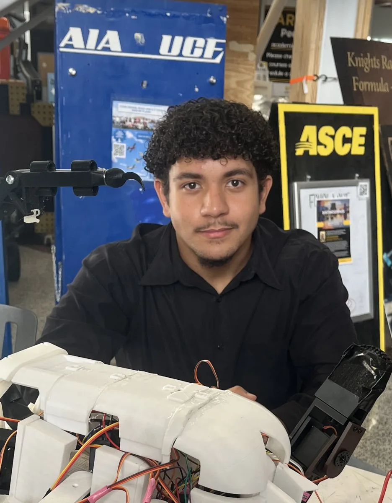
About
I'm a Mechanical Engineering student at UCF, minoring in Intelligent Robotic Systems, and I like building things that move on their own and survive harsh environments.
Right now I'm an Autonomous Driving Research Assistant at the CAVREL Lab, developing and testing ROS 2 autonomy software on 1/10-scale F1TENTH race vehicles. I've built and serviced five of them, and tuning their suspension cut our average collision rate by 23%.
I'm also the Mechanical Workshop Lead for AI Racer, UCF's autonomous racing initiative, where I'm building a mechanical curriculum to help students go from a bare chassis to a race-ready autonomous car. I competed in our AI Racer Grand Prix in 2026, and my team took 1st place.
On the space side, I'm the Lead Test Engineer for an IREC 2027 rocket payload. I set the flight-derived test levels and pass/fail criteria, design low-cost test rigs like a centrifuge and a guided drop rig, and back each test procedure with hand calculations.
I'm CSWA, CSWP, and CSWP-DT certified in SolidWorks, and I'm comfortable taking a part from CAD to a 3D print to a working system on the bench. I speak English, Portuguese, and some Spanish.
I'm looking for internships in robotics and space systems. If you're working on autonomy, aerospace hardware, or test engineering, I'd love to connect.
AI RacerGrand Prix · 1st place
A small-scale autonomous F1-style car running a Linux, ROS 2 driving stack. Our team worked across mechanical, electrical and software groups and won UCF's AI Racer Grand Prix with a record top speed.
Top speed after removing the rear wing and downsizing the chassis to cut dead weight and battery strain.
Modeled the chassis, suspension, steering, wings and bumper in SolidWorks, then prototyped and printed them in ABS.
Compact mounts for the Raspberry Pi 4 and RPLIDAR inside competition size limits; wired and soldered the electronics.
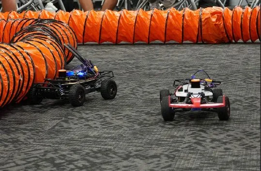
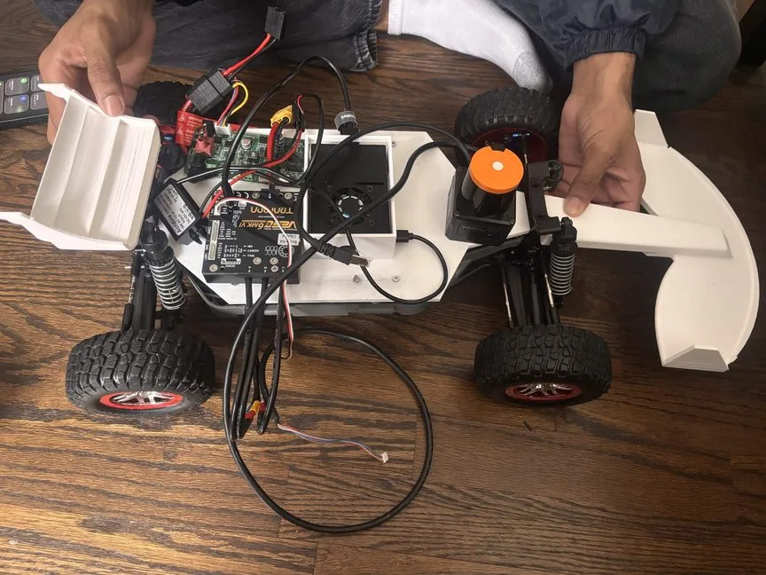
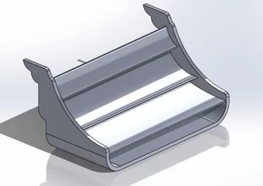
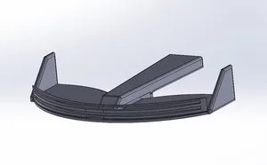
Less wing, more speed
The rear wing came off the final car. Lighter, less battery strain, and 2 m/s faster on the straights.
Self-DrivingAutonomous driving research on F1TENTH cars
Developing and testing ROS 2 autonomy software on 1/10-scale F1TENTH race vehicles for local and international autonomous racing competitions.
Heading flip traced to a sign bug in the VESC driver's Ackermann model. Fixed it and restored accurate odometry for SLAM.
Tuned a gap-following controller (gain, smoothing, saturation, look-ahead) to hold sharp S-turns and wide turns.
Average collision rate after suspension tuning; diagnosed VESC, power board and LiDAR faults.
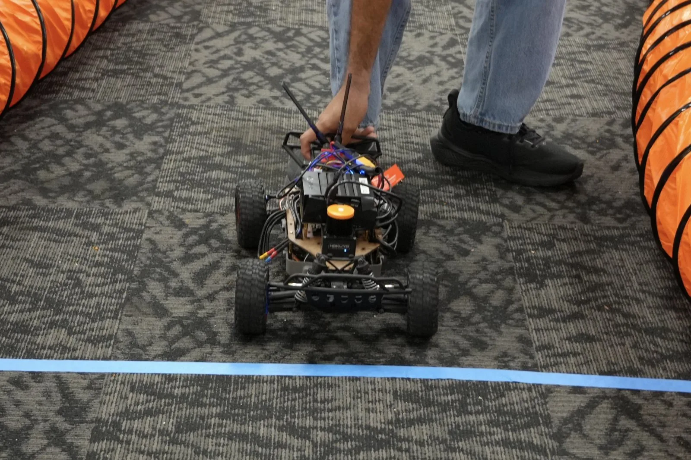
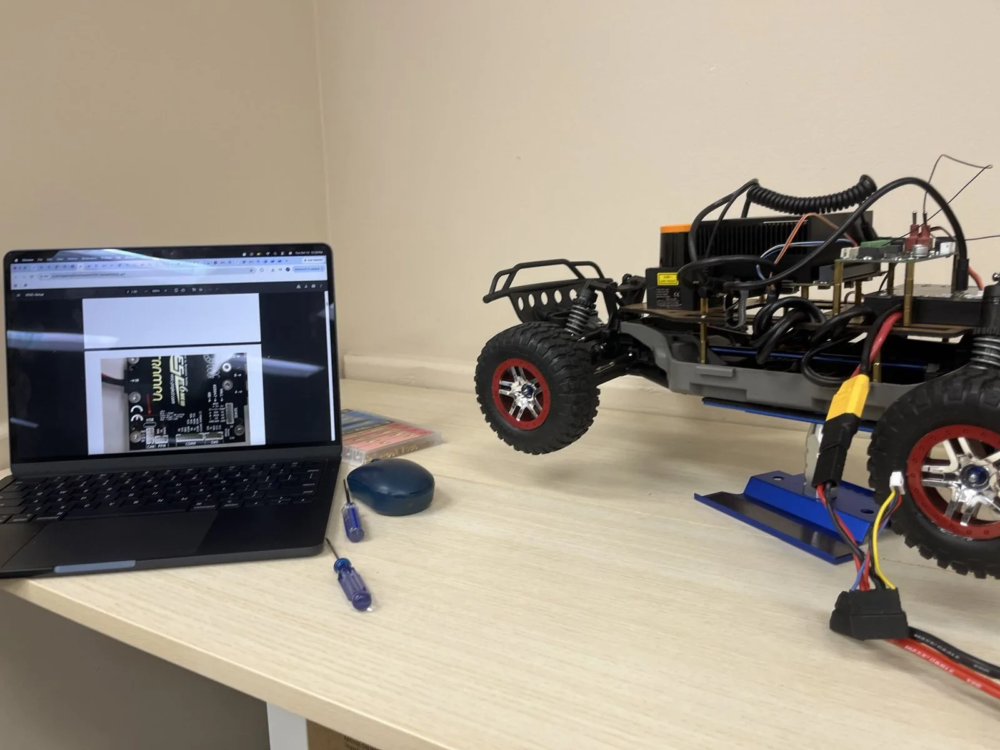
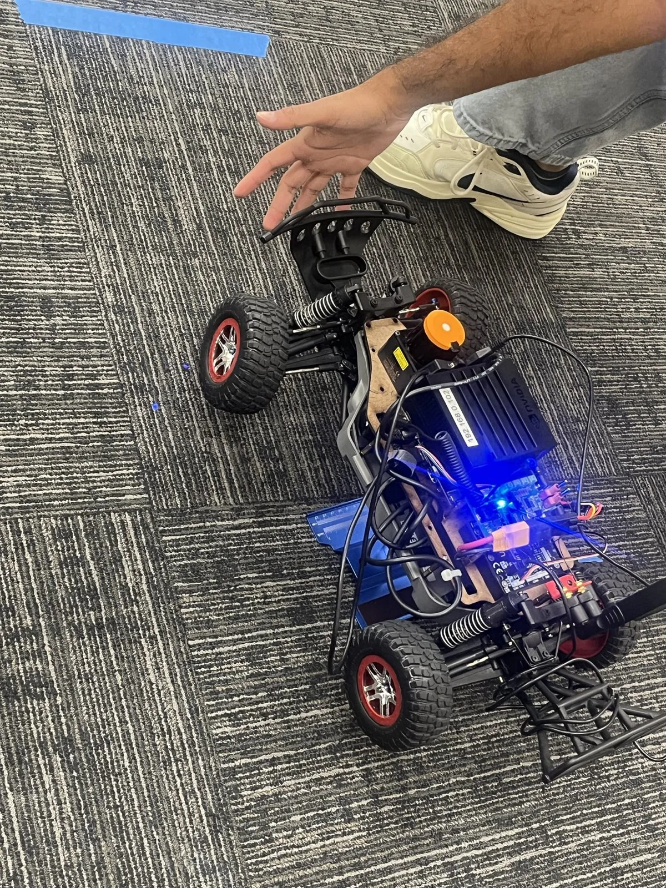
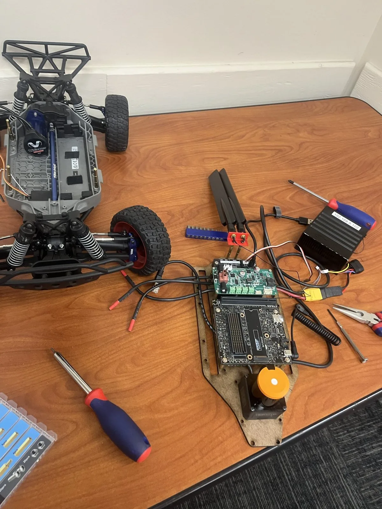
Stack
F1TENTH Powerboard · VESC · Hokuyo UST-10LX LiDAR · NVIDIA Jetson · 3S LiPo · ROS 2 · SLAM · Follow-the-Gap
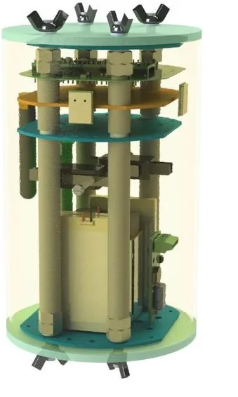
IREC Payload2027 rocket payload test campaign
A multi-sensor payload that logs pressure, temperature and acceleration through flight and checks whether a student-designed vibration-isolation mount protects its data. I lead environmental testing: what the payload must survive, the procedures, and low-cost rigs to prove it, coordinating with the mechanical, electrical and software leads.
Sustained-load level, from about 25 g at boost plus margin.
Thermal soak for a June launch in Midland, TX.
Vacuum level for apogee near 32,780 ft.
Centrifuge and guided drop rig together, instead of renting lab equipment.
Test matrix
The launch site in Midland, TX in mid-June, a predicted apogee near 32,780 ft, and the loads from boost, burnout, deployment and landing. Each level carries margin above flight, and every test has a written pass/fail rule before it runs.
- Driver
- Boost, about 25 g
- Method
- Centrifuge, payload powered and logging
- Pass if
- Nothing moves or cracks; no resets, SD errors or data gaps
- Driver
- Burnout, deployment, landing
- Method
- Guided drop on a carriage; height sets peak g, pad sets pulse; every axis
- Pass if
- Nothing shifts or unseats, especially the SD card
- Driver
- Full boost load on sled, plates, mounts
- Method
- Static weights, 60 s hold, then flipped; spares stepped ~10% to failure
- Pass if
- No cracks, permanent bending or loose fasteners
- Driver
- 92–95°F ambient plus airframe heating
- Method
- Oven soak 120 → 135 → 150°F, 1 hr each; load PETG mounts hot
- Pass if
- Mounts hold shape; Teensy, battery and SD stay in limits
- Driver
- Apogee near 32,780 ft
- Method
- Vacuum canister in steps against a reference barometer
- Pass if
- Both MS5611s match; vents keep up; housing intact
- Driver
- Full mission on one battery
- Method
- Endurance, brownout and reset tests; numbered samples checked by script
- Pass if
- Logging starts at launch, survives resets, loses nothing
Low-cost rigs
A student budget rules out renting a centrifuge, shaker or thermal-vacuum chamber.
Centrifuge. Spinning the payload on an arm makes the outward pull act like boost. With a 0.25 m arm, 31 g sets the speed:
ω = 333 rpm × 2π / 60 = 34.9 rad/s
a = ω²r = 34.9² × 0.25 = 304 m/s² = 31.0 g
12 V gear motor, bearing shaft, counterweight, plywood enclosure: $85–115.
Guided drop. Height sets the peak; pad stiffness sets the pulse length. A 2 cm start is about a 20 g, 5 ms pulse, so the test starts gentle and steps up. $15–50.
Pressure & vent test
The payload finds altitude from two barometers inside a sealed housing, so the air inside has to keep up with the air outside on a fast climb. If the vents are too small, readings lag and the housing takes a load it wasn't designed for.
The powered payload and a phone barometer go in a vacuum canister and pump down through three flight points. At each one, the two MS5611 readings are averaged over 30 s and compared. At mid-range, a quick valve release measures vent lag directly.
2,780 ft. Baseline against the reference.
Quick-release vent-lag test happens here.
About 32,780 ft. Both sensors must agree.
Functional check and the data-gap script.
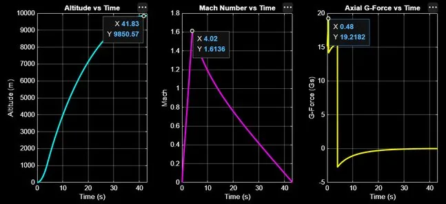
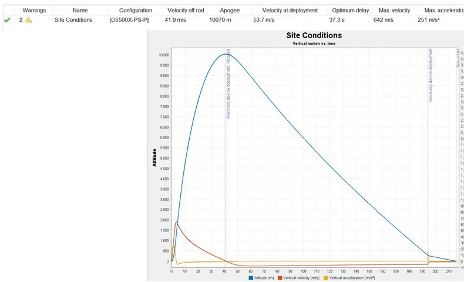
32,780 ft
Predicted apogee. Teensy 4.1, dual KX134 high-g accelerometers, dual MS5611 barometers and microSD logging all get tested against these flight numbers.
ScorpionRobotic hexapod · Project STRIDE
A servo-driven hexapod built as a scorpion, so the claws and tail add moving parts beyond a basic walker. On a team of seven I designed the tail, the claws, the second-story deck and parts of the front body in SolidWorks, all printed in PETG, and we presented it to industry judges at the UCF STEEL Fall 2026 showcase.
Tail holding torque (4.37 → 2.1 kg·cm) from moment calcs that set its resting pose inside the MG996R's rating.
Safety factor in a three-leg tripod stance for a 5.3 lb robot; power budgeted for 315 W peak on a 6 V rail.
18-mode FMEA; the six highest risks cut with mechanical stops, a watchdog, output gating and fused power.
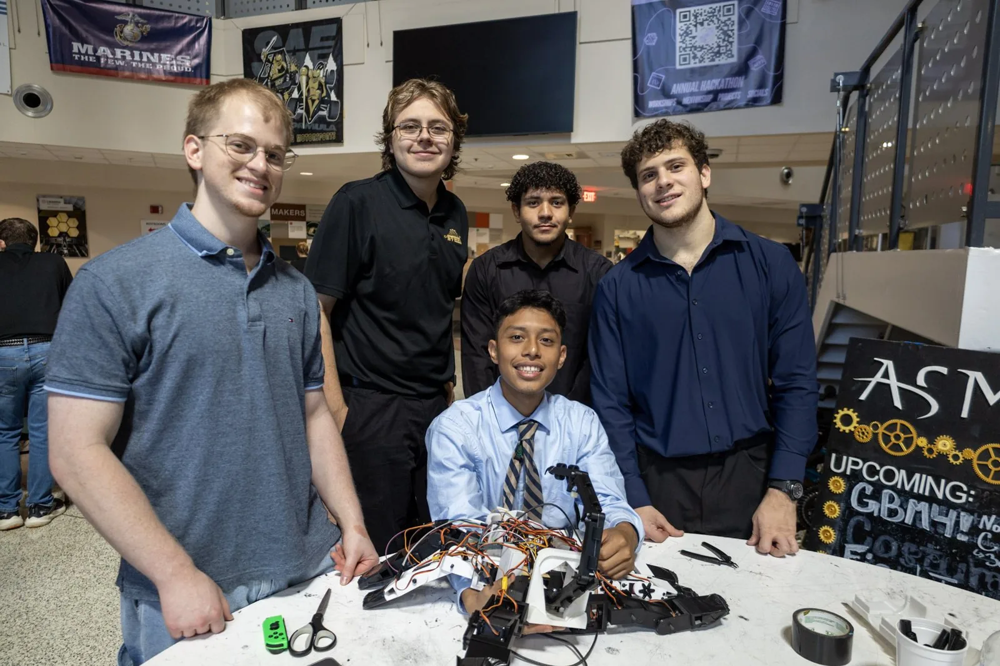
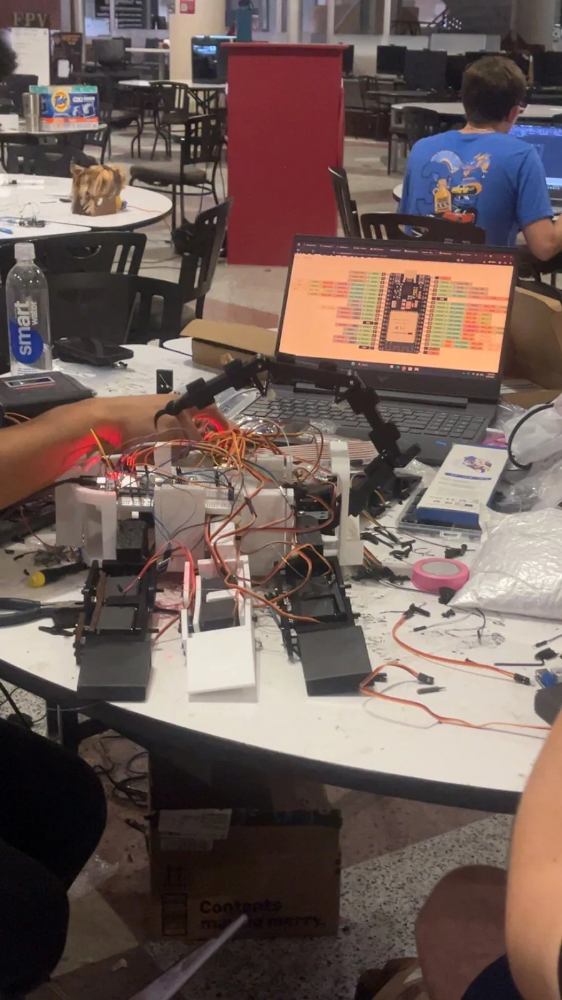
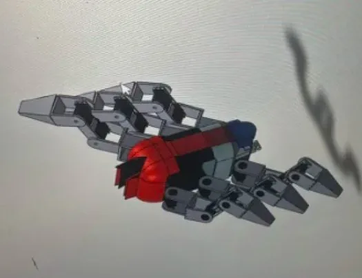
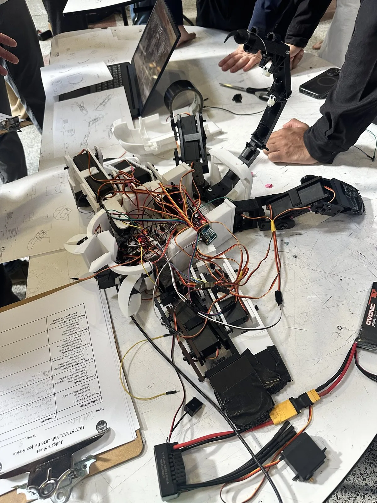
Team of seven
Built, driven and presented to industry judges at UCF STEEL, Fall 2026.
Loading model
Put it
together
Click the model, then scroll to assemble it. Drag to spin it. My parts: the tail and stinger, the claws, the second-story deck and the front body.
Why the tail curls
A 20 in tail held out straight puts 4.37 kg·cm on its base servo. The MG996R is rated for about 2.5–3.0 kg·cm continuous, so a straight tail would overheat and sag over a demo.
I broke the tail into short PETG segments so it could curl. Running the moment calculation for each pose showed that arching it up into an S-curve moves its center of gravity back over the body. The lever arm drops by more than half and the holding torque falls to 2.1 kg·cm, inside the servo's continuous range.
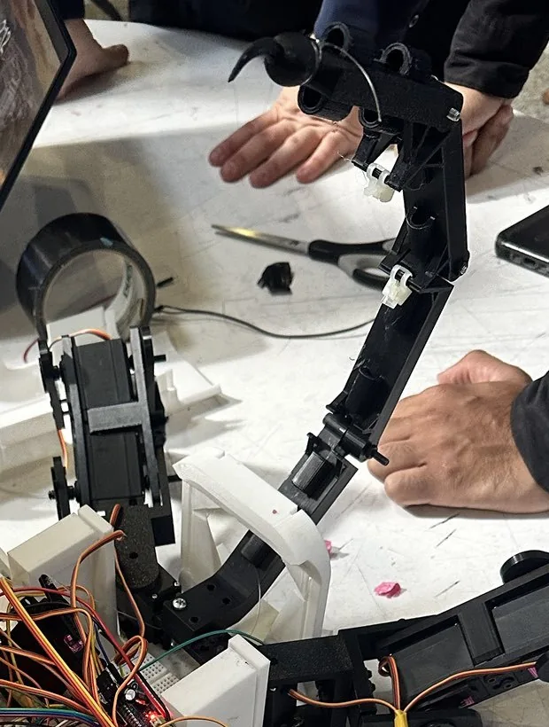
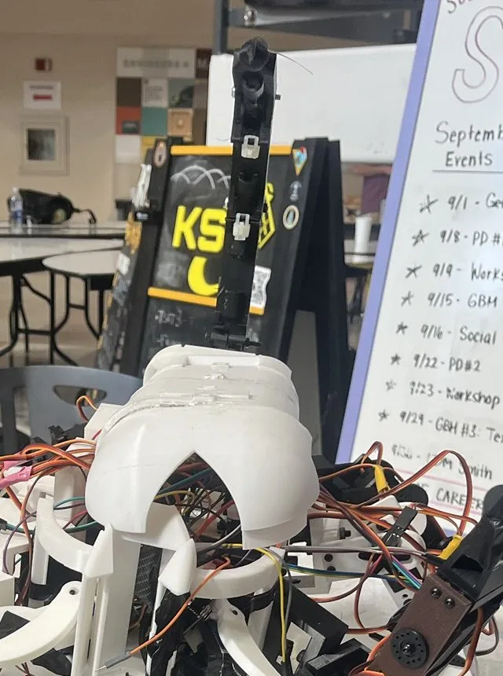
Base and linked segments in SolidWorks to prove the range of motion.
Two- and three-segment links, a stinger end, and platforms that mount the tail to the body.
Servo-driven chain links with guide wheels. The small links fractured under load.
The built robot runs the Rev B segmented tail, which carries the load without cracking.
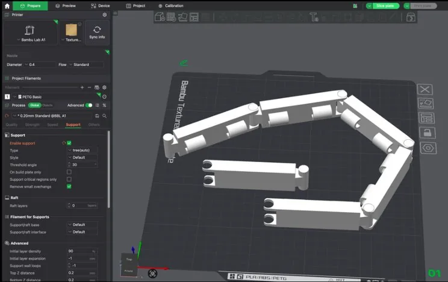
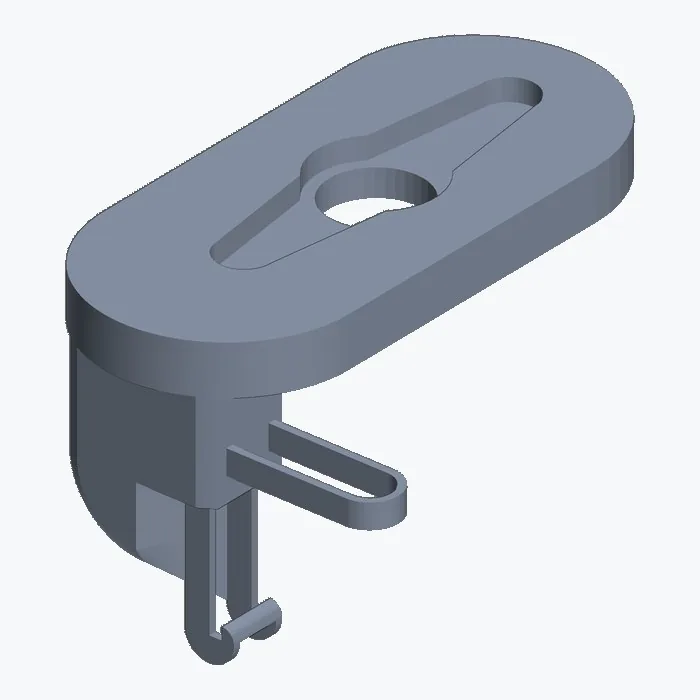
Two-story chassis
Nineteen-plus servos, two driver boards, an ESP32, a buck converter and a LiPo all have to fit in a scorpion-shaped body that still carries a 5.3 lb robot on three legs.
The main body holds the leg servos in pockets along each side. The second-story deck I designed sits above it and carries the servo driver board and the tail servo, so the legs are driven from above with short wire runs. I also designed parts of the front body, where the claws mount.
Sections of the front body and the claws that mount to it.
Cutouts and mounting holes for the driver boards and wiring.
Dedicated wire slots, plus mounts for the servo board and tail servo.
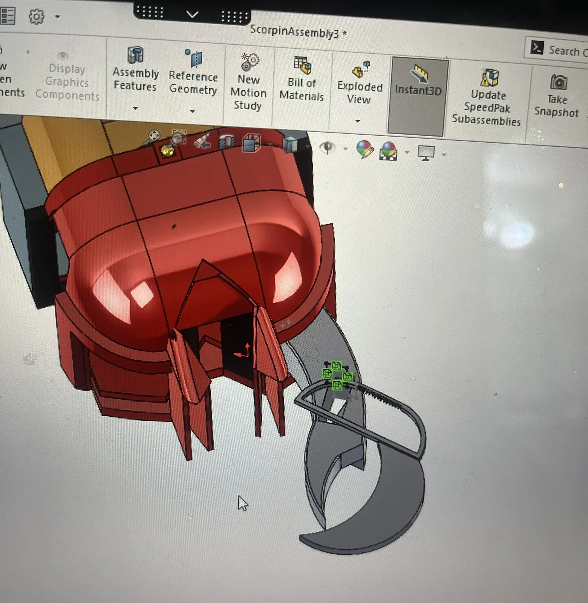
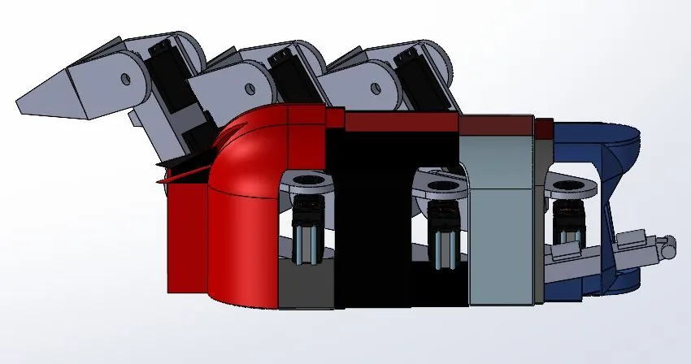
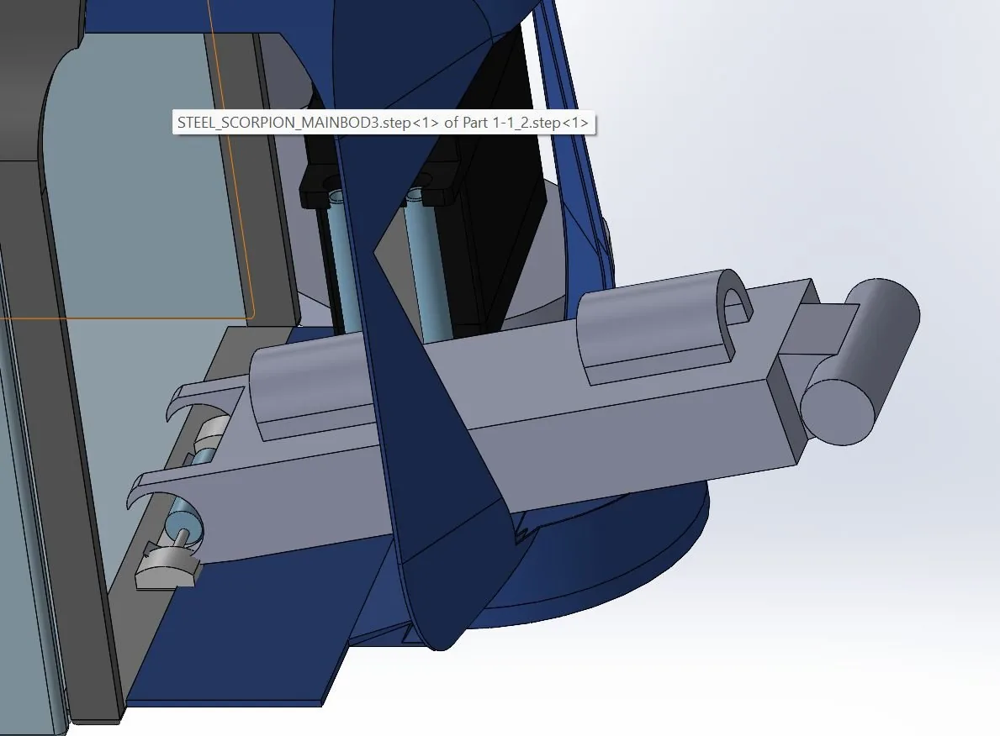
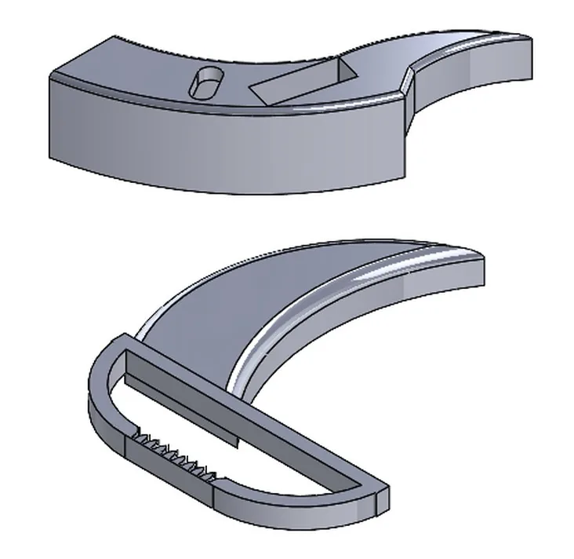
S.A.I.L.Sargassum Analysis & Inter-satellite Laser
A CubeSat constellation designed with two teammates for the Florida Department of Environmental Protection. It demonstrates laser crosslinks between small satellites, using live sargassum bloom imagery along Florida's coasts as the data being moved.
CubeSats moving data at 0.6–1 Gbps over a 100–120 day mission.
S-band downlink margin against a 6 dB requirement.
Both satellite types, including 25% contingency.
Program budget, plus CONOPS, modes and commissioning checkpoints.
Two kinds of satellite
FDEP wants a cheap way to move large volumes of coastline data. The constellation proves laser crosslinks can do it.
Observation sats point at the coast during an imaging window, store images and health data, then crosslink to a visible relay. Radio sats catch the crosslink, log how it performed and downlink everything over X-band.
Safe mode kicks in below 30% battery. The laser runs in three phases: 5 minutes to acquire and track, 120 s at 35 W moving about 12 GB, then 30 s to power down.
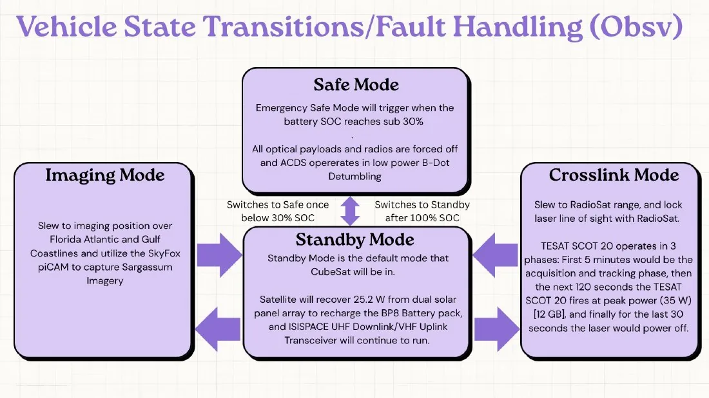
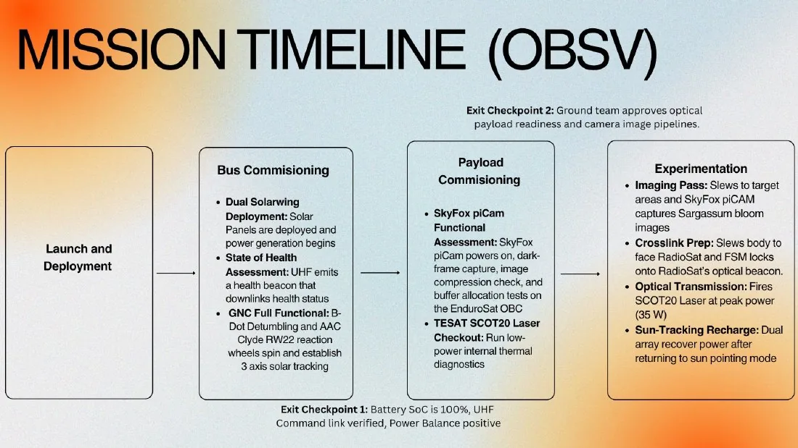
At least 4 deployed and in contact; a stable crosslink moving 2 GB a day; link metrics to the ground.
All 6 hold the crosslink all mission at 4 GB+; regular bloom data; 90% of daily downlinks succeed.
Start Nov 2026, launch by May 2028, six months of operations, data to the customer by spring 2029.
Engineering budgets
vs. 6 dB required · S-band 2.23 GHz, 1 W, 1 Mbps, 450 km orbit, 5 m dish
About 66 m at 600 km, well inside the SCOT20's ±1° steering mirror
Observation / radio sat with 25% contingency, under the 6U limit
Recovered in Standby from dual arrays into a 100 Wh battery; laser peaks at 35 W
Simulated orbit by orbit so storage fills between passes and clears at each downlink
Six 6U CubeSats with launch, ground network time and laser terminals
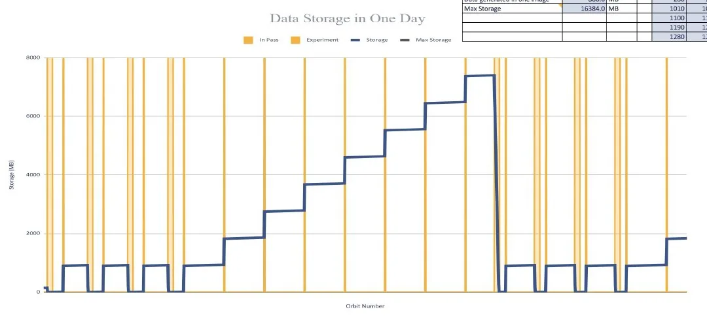
Leadership
AI Racer
Mechanical Workshop Lead · Oct 2026 – NowCo-chairing the workshops committee and building the spring mechanical curriculum (chassis, suspension and steering, sensor mounting, 3D printing) so new students can take a bare chassis to a race-ready autonomous car.
SHPE UCF
Project Planning DirectorPlans timelines for the chapter's workshop series and competitions. Organized and budgeted a five-week SolidWorks CSWA workshop series, and helped start the SHPE and Florida Space Institute collaboration behind the IREC payload.
UCF SMART
Cleanroom semiconductor fabricationHands-on semiconductor fabrication in UCF's cleanroom. Pursuing UCF's Certificate in Semiconductor Engineering and Manufacturing Instruction.